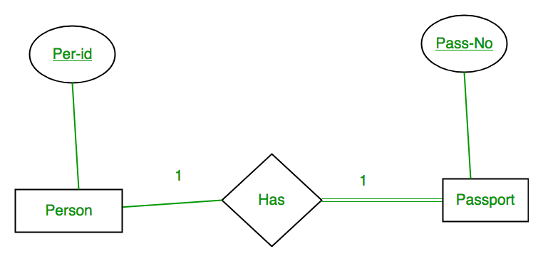
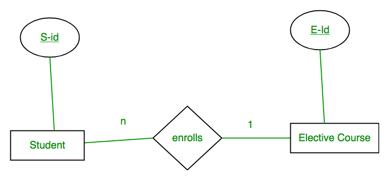
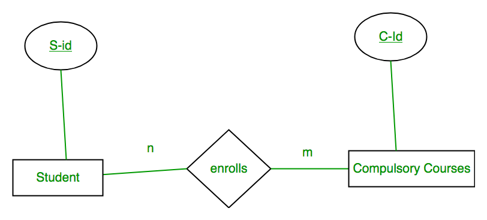

To understand this, you should have an idea about:
After designing the ER diagram of system, we need to convert it to Relational models which can directly be implemented by any RDBMS like Oracle, MySQL etc. In this article we will discuss how to convert ER diagram to Relational Model for different scenarios.
Case 1: Binary Relationship with 1:1 cardinality with total participation of an entity
A person has 0 or 1 passport number and Passport is always owned by 1 person. So it is 1:1 cardinality with full participation constraint from Passport.
{kind=link}
First Convert each entity and relationship to tables. Person table corresponds to Person Entity with key as Per-Id. Similarly Passport table corresponds to Passport Entity with key as Pass-No. Has Table represents relationship between Person and Passport (Which person has which passport). So it will take attribute Per-Id from Person and Pass-No from Passport.
| Person | Has | Passport | |||||
| Per-Id | Other Person Attribute | Per-Id | Pass-No | Pass-No | Other PassportAttribute | ||
| PR1 | – | PR1 | PS1 | PS1 | – | ||
| PR2 | – | PR2 | PS2 | PS2 | – | ||
| PR3 | – | ||||||
Table 1
As we can see from Table 1, each Per-Id and Pass-No has only one entry in Has table. So we can merge all three tables into 1 with attributes shown in Table 2. Each Per-Id will be unique and not null. So it will be the key. Pass-No can’t be key because for some person, it can be NULL.
| Per-Id | Other Person Attribute | Pass-No | Other PassportAttribute |
Table 2
Case 2: Binary Relationship with 1:1 cardinality and partial participation of both entities

A male marries 0 or 1 female and vice versa as well. So it is 1:1 cardinality with partial participation constraint from both. First Convert each entity and relationship to tables. Male table corresponds to Male Entity with key as M-Id. Similarly Female table corresponds to Female Entity with key as F-Id. Marry Table represents relationship between Male and Female (Which Male marries which female). So it will take attribute M-Id from Male and F-Id from Female.
| Male | Marry | Female | |||||
| M-Id | Other Male Attribute | M-Id | F-Id | F-Id | Other FemaleAttribute | ||
| M1 | – | M1 | F2 | F1 | – | ||
| M2 | – | M2 | F1 | F2 | – | ||
| M3 | – | F3 | – | ||||
Table 3
As we can see from Table 3, some males and some females do not marry. If we merge 3 tables into 1, for some M-Id, F-Id will be NULL and for some F-Id, M-Id will be NULL. So there is no attribute which is always not NULL. So we can’t merge all three tables into 1. We can convert into 2 tables. In table 4, M-Id who are married will have F-Id associated. For others, it will be NULL. Table 5 will have information of all females. Primary Keys have been underlined.
| M-Id | Other Male Attribute | F-Id |
Table 4
| F-Id | Other FemaleAttribute |
Table 5
Note: Binary relationship with 1:1 cardinality will have 2 table if partial participation of both entities in the relationship. If atleast 1 entity has total participation, number of tables required will be 1.
Case 3: Binary Relationship with n: 1 cardinality
In this scenario, every student can enroll only in one elective course but for an elective course there can be more than one student. First Convert each entity and relationship to tables. Student table corresponds to Student Entity with key as S-Id. Similarly Elective_Course table corresponds to Elective_Course Entity with key as E-Id. Enrolls Table represents relationship between Student and Elective_Course (Which student enrolls in which course). So it will take attribute S-Id from and Student E-Id from Elective_Course.
{kind=link}
| Student | Enrolls | Elective_Course | |||||
| S-Id | Other Student Attribute | S-Id | E-Id | E-Id | Other Elective CourseAttribute | ||
| S1 | – | S1 | E1 | E1 | – | ||
| S2 | – | S2 | E2 | E2 | – | ||
| S3 | – | S3 | E1 | E3 | – | ||
| S4 | – | S4 | E1 | ||||
Table 6
As we can see from Table 6, S-Id is not repeating in Enrolls Table. So it can be considered as a key of Enrolls table. Both Student and Enrolls Table’s key is same; we can merge it as a single table. The resultant tables are shown in Table 7 and Table 8. Primary Keys have been underlined.
| S-Id | Other Student Attribute | E-Id |
Table 7
| E-Id | Other Elective CourseAttribute |
Table 8
Case 4: Binary Relationship with m: n cardinality
{kind=link}
In this scenario, every student can enroll in more than 1 compulsory course and for a compulsory course there can be more than 1 student. First Convert each entity and relationship to tables. Student table corresponds to Student Entity with key as S-Id. Similarly Compulsory_Courses table corresponds to Compulsory Courses Entity with key as C-Id. Enrolls Table represents relationship between Student and Compulsory_Courses (Which student enrolls in which course). So it will take attribute S-Id from Person and C-Id from Compulsory_Courses.
| Student | Enrolls | Compulsory_Courses | |||||
| S-Id | Other Student Attribute | S-Id | C-Id | C-Id | Other Compulsory CourseAttribute | ||
| S1 | – | S1 | C1 | C1 | – | ||
| S2 | – | S1 | C2 | C2 | – | ||
| S3 | – | S3 | C1 | C3 | – | ||
| S4 | – | S4 | C3 | C4 | – | ||
| S4 | C2 | ||||||
| S3 | C3 | ||||||
Table 9
As we can see from Table 9, S-Id and C-Id both are repeating in Enrolls Table. But its combination is unique; so it can be considered as a key of Enrolls table. All tables’ keys are different, these can’t be merged. Primary Keys of all tables have been underlined.
Case 5: Binary Relationship with weak entity
In this scenario, an employee can have many dependants and one dependant can depend on one employee. A dependant does not have any existence without an employee (e.g; you as a child can be dependant of your father in his company). So it will be a weak entity and its participation will always be total. Weak Entity does not have key of its own. So its key will be combination of key of its identifying entity (E-Id of Employee in this case) and its partial key (D-Name).
First Convert each entity and relationship to tables. Employee table corresponds to Employee Entity with key as E-Id. Similarly Dependants table corresponds to Dependant Entity with key as D-Name and E-Id. Has Table represents relationship between Employee and Dependants (Which employee has which dependants). So it will take attribute E-Id from Employee and D-Name from Dependants.
| Employee | Has | Dependants | ||||||
| E-Id | Other Employee Attribute | E-Id | D-Name | D-Name | E-Id | Other DependantsAttribute | ||
| E1 | – | E1 | RAM | RAM | E1 | – | ||
| E2 | – | E1 | SRINI | SRINI | E1 | – | ||
| E3 | – | E2 | RAM | RAM | E2 | – | ||
| E3 | ASHISH | ASHISH | E3 | – | ||||
Table 10
As we can see from Table 10, E-Id, D-Name is key for Has as well as Dependants Table. So we can merge these two into 1. So the resultant tables are shown in Tables 11 and 12. Primary Keys of all tables have been underlined.
| E-Id | Other Employee Attribute |
Table 11
| D-Name | E-Id | Other DependantsAttribute |
Table 12
Article contributed by Sonal Tuteja. Please write comments if you find anything incorrect, or you want to share more information about the topic discussed above